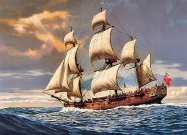
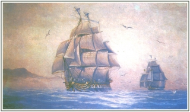

Бриг
Двухмачтовое морское судно с прямыми парусами.
Класс парусных боевых двухмачтовых кораблей 18 – 19 веков, используемых для крейсерской, дозорной и посыльной служб.
У брига 2 мачты – грот-мачта и фок-мачта, все паруса на которых прямые, кроме одного – грота-гаф-триселя, расположенного
на грот-мачте.
Факт дня
Все парусные суда делятся на две категории: большие парусные суда - имеющие
фок-мачту и грот-мачту, и малые парусные суда — имеющие грот-мачту и бизань-мачту, либо имеющие единственную мачту.
 Индевор
Корабль Джеймса Кука, на котором знаменитый
мореплаватель совершил свое первое кругосветное путешествие.
 «Надежда» и «Нева»
Два небольших шлюпа,
впервые в истории русского мореплавания обогнувших Земной шар в 1803-1806 годах. Об этих парусниках всегда
говорят вместе и всегда в контексте знаменитой кругосветки.
 Кэрол А. Диринг
Кэрол А. Диринг
Парусник «Кэррол А. Диринг» был пятимачтовой шхуной,
построенной в 1911 году, и служил транспортным судном. Владелец судна Г.Г. Диринг назвал корабль в честь своего сына. В свое последнее плавание
«Кэррол А. Диринг» отправился из порта Рио-де-Жанейро к берегам Америки 2 декабря 1920 года.